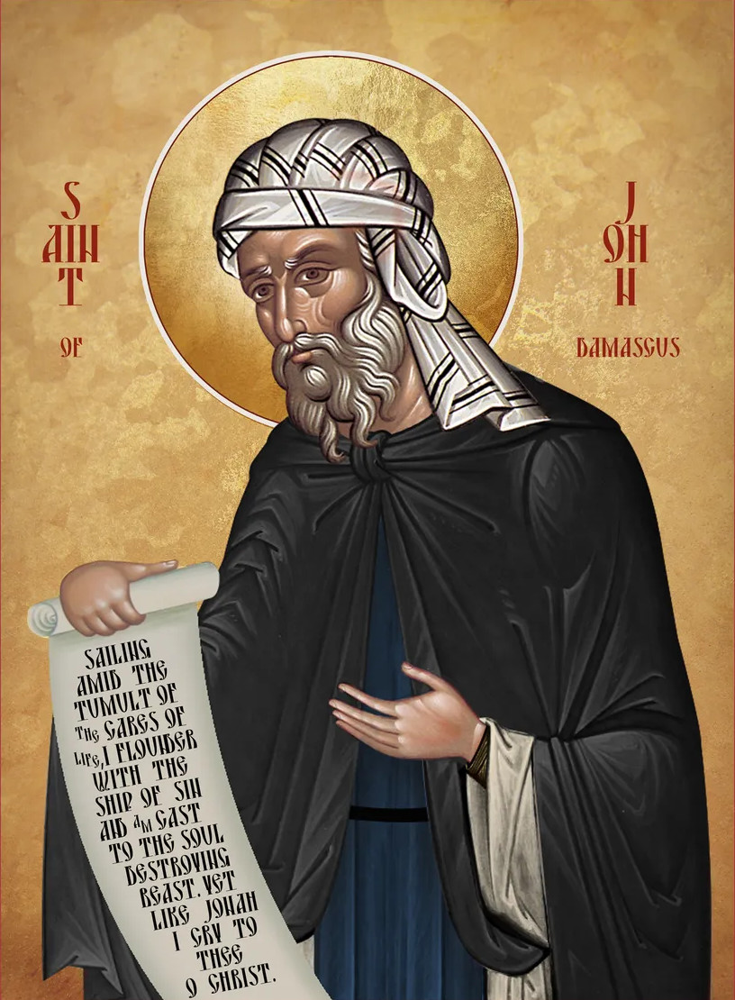

☦
Analogion
Byzantine chant materials in English.
Tartalom:

Divine Liturgy
Divine Liturgy, fixed elements
☦
Eastern Orthodox Jurisdictions in Hungary
Ecumenical Patriarchate
Hungarian Orthodox Church - Moscow Patriarchate
Serbian Orthodox Church, based in Buda
Bulgarian Orthodox Church
Romanian Orthodox Church